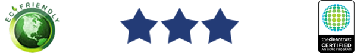

Why UCS?
I wanted to start a business that would not only be the best in town but hopefully expand statewide. In 2019, I began a carpet and upholstery business with a franchised low moisture cleaning method. However, I saw a need to expand services and offer both low moisture cleaning as well as truck mounted steam cleaning, allowing entrance into natural stone, tile & grout services.Thus, UCS was formed in 2020 and we began to turn our focus to the commercial while continuing with the residential marketplace. Today, our primary customer is the commercial account, but we service residential clients as well.
Our unique systems allow for aggressive deep cleaning without tearing fibers, and with lower dry times. The results surpass traditional steam cleaning for both commercial and residential customers. Please visit our contact page with any questions regarding our methods or your issue.
What's Your Project?
We Tackle The Toughest Grime!
How The Dirtiest Rugs Get Professionally Cleaned | A Video from Insider on YouTube
- Carpet
- VCT
- Tile and Grout
- Rugs
- Upholstery
- Concrete
- Marble
Areas Served
We Travel To You
Addison, Aurora, Bartlett, Bensenville, Bloomingdale, Carol Stream, Clarendon Hills, Darien, Downers Grove, Elmhurst, Eola, Fox Valley, Glen Ellyn, Glendale Heights, Hinsdale, Itasca, Lisle, Lombard, Medinah, Naperville, Oak Brook, Roselle, Villa Park, Warrenville, Wayne, West Chicago, Westmont, Wheaton, Willowbrook, Winfield, Wood Dale, Woodridge
Certified Commercial Cleaning
Eco-Friendly and Institute of Inspection, Cleaning and Restoration Certified

Carpets Stay Clean
- New cost saving technologies
- Convenient process with 1 hour dry time
- Awarded excellence by CRI
- No residues, no reappearing spots